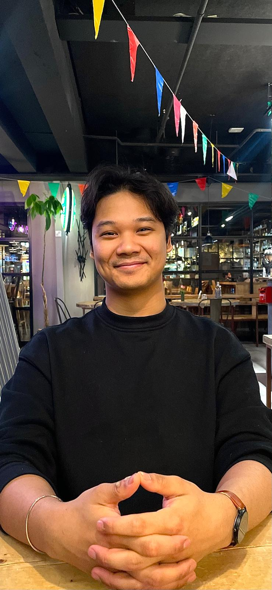

Software Developer & Engineer / Liqueur Artist
A multi-talented young adult from Finland, with dual Finnish-Thai citizenship, I balance part-time hospitality work with ambitious pursuits in software development, 3D printing, and artisan craftsmanship. Showcasing a unique blend of technical expertise, creative engineering, entrepreneurial drive, and authentic interpersonal warmth, making myself a great ideal candidate for roles in software engineering, game development, or maker-tech innovation. I currently work part-time as a bartender and waiter in Finland, honing my skills in customer service, single-minded focus under pressure, and creative beverage presentation. This role funds my self-directed transition into software development, where I dedicate myself at least 2-4 hours of daily coding practice and projects building. Past experience include YouTube video creation for fun and building a portfolio of bartending craftsmanship. Demonstrating an ability to produce professional content and manage creative workflows.
My leadership style is hands-on, people-first, and built on example rather than titles. I have several years of student council and informal shift-leading experience, where I have guided school projects and helped new coworkers adapt smoothly to demanding hospitality environments. I earn respect by doing the work alongside others, listening as much as I speak, and creating a culture where honesty and high performance go together. I also care deeply about my team’s well-being: I remind managers and coworkers to rest, eat, and drink water, and I step into stressful tasks to reduce pressure on others. My mix of directness, humor, and “annoying in a caring way” helps teams stay grounded, focused, and human even under heavy load
Funny
Creative
Open and kind-hearted despite an introverted core, I thrive in relationships by being outgoing on shared interests, valuing honesty and trust above all. I bring levity to teams with well-timed jokes, maintain full focus when delivery matters, and express yourself completely — no half-assed measures. Even as a "somewhat annoying" teammate who rage-baits in codebases/in person to refocus the group on the big picture, I complain openly yet deliver my absolute best, bullying colleagues (even employers) to take breaks if pressure mounts or they seem unwell. I am open to communicate even when the receiving one is higher rank person than I am.
3D Printing & Modeling
DIY Engineering/Maker projects
Software, Game & Web Development
Bartending Craftsmanship
Entertainment
Expert in C++ systems design, CMake for builds, Git for version control; comfortable with full-stack (React Native), cross-platform (iOS/Android/PC), and game dev tools like SDL3.
MacOS, Linux, AliExpress for electronics, Puuilo for supplies; local AI model runs and server architecture knowledge.
FDM/resin 3D printing, network engineering, mechanics/physics/maths for DIY projects.
Waitering & Bartending customer service with extended knowledge and communication skills
Artisan in coding and in taste behind the bar; everything done with pride and care.
Rasekon ammattiopisto, Raisio, Finland
Turun ammatti-instituutti, Turku, Finland
Mixed It Right Bartending Academy | M.I. Rony
Raseko | Raisio, Finland
Naantali Spa | Naantali, Finland